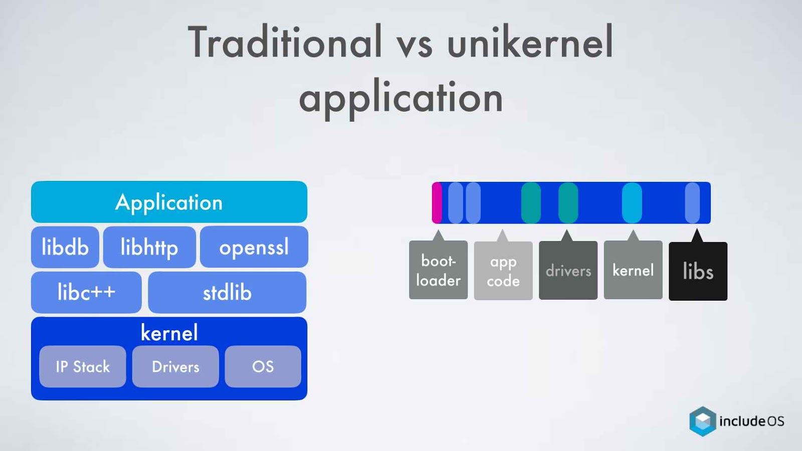
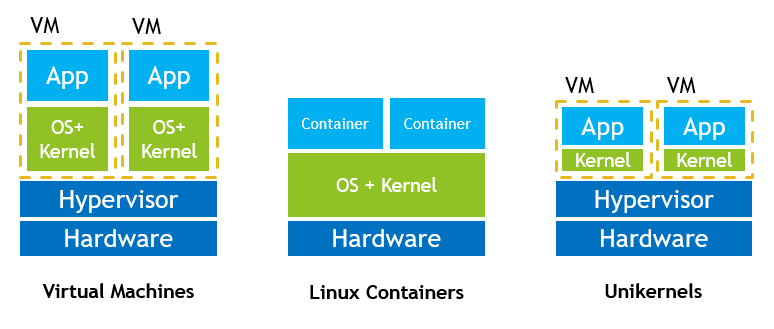

An overview of LibraryOS and Unikernels
Cornell CS6410 - Advance Systems 是最近幾個月找系統領域經典論文的一個來源，幾個星期前翻到了 1995 年的論文 - Exokernel，
比起實作內容，我更著重在這些技術被使用的場景跟發展發向分析。
這篇內容是我在實驗室會議上報告時的草稿，也是我第一次嘗試梳理單一題目跨十幾年來的的發展狀況。 簡單來說，這是我在兩週內梳理各篇論文後對於 Librariy OS 的理解。

提前澄清
Unikernels 不是OS, 也不是kernel，而是一種系統的統稱。
Unikernels 是一種 single address space 系統。在這種系統裡面，沒有 user 跟 kernel space 的區別，使用者可以碰到過去所定義的 kernel 區段，但整個系統上面只存在單一使用者，可以想做 user 就是 kernel。系統的組件不再是撰寫程式時自動假設，而是要明顯的 #include 才能夠使用。
可以從這裡看出來，這是一種特殊的系統，只要應用程式沒有用到檔案系統，打包後的系統甚至不需要檔案系統也可以使正常運作。

但為什麼要這樣做，為什麼有東西會設計成這樣？ 原因是這種系統是編譯過後的產物，整個系統的目的就只有一個 - 成功運行使用者最開始指定的那支程式。有點像是軟體的 SoC，把一切都打包進同一塊區域。
可先看系統架構圖

興起環境(應用場景)
想要談這種系統，就要先稍微提一下他的誕生環境:
如果你想架網站或服務，通常方法是到 AWS 或是 GCP 上租借。近幾年來，不管是因為購買硬體裝置佔位子或是不符合成本效益、使用者不想要自行管理伺服器，又或是想達到快速部署的效果，大部分的服務都漸漸轉向現有的雲端業務廠商。
這些雲端廠商的主要優點是他們擁有大量運算資源跟使用者，可以透過虛擬化技術來確實的利用每一分硬體資源，高效率的經濟可以讓他們的硬體成本遠低於一般使用者。
但就大部分使用情況來說，使用者租借伺服器大多只是為了架設單一服務，也就是說，在他們的虛擬化系統中往往只有一支程式在運行。試想，這種為了單一服務而部署整個 Linux kernel 的情況並不太有效率，首先，因為 Linux Kernel 的設計是為了支援世界上各式各樣的運算裝置所產生，正常程式根本用不到所有 Kernel 中的原始碼，好比說一個 TCP echo Server 根本不需要去理解各式各樣的 file server 架構。再來，Kernel 是為了多使用者而設計，當我們只有單一 process 的時候，是真的需要使用到這些針對多重使用者管理的程式碼嗎？ 現今這種直接部署整台機器的想法實際上是多佔用不少硬碟跟記憶體資源，而缺點也會隨著業務量的增加而逐漸明顯，這種雲端業務不是不能 scale，而是會 scale 的不好。
淵源與主要想法
回頭談談歷史:
Exokernel
在 Kernel 設計中，一直以來都是在 Microkernel 跟 Monolithic kernel 兩者之間徘徊，但 1995 年跑出來了另外一種不同維度的嘗試 -- Exokernel。exo- 一詞的意思是外面，基本上來說各位可以想成跟超人一樣內褲外穿，主要是嘗試將過去人認為作業系統要做的大部分事情搬移到 userspace 之中，讓真正的 kernel 只提供運行電腦所需的最小介面。
你可以把電腦資源想像成一個房子，在這個情況下 Exokernel 扮演著守門人，使用者拿著身份憑證進入房間之後就可以自由使用資源，只不過使用者如果不跟 exokernel 合作，exokernel 就會直接跑進房子內讓使用者掃地出門。
這種 Kernel 有什麼好處？最簡單的好處是因為大部分的程式碼都在 userspace 執行，使用者的程式執行時 CPU 可以不用頻繁在 userspace 跟 kernelspace 間來回切換，大幅度減少 context switch 頻率來換取大幅效能增進。第二個好處，也就是 Exokernel 的主要訴求 - 希望使用者可以不被傳統 Kernel 限制，自由控制底層行為來換取極端效能優化 - 做事就要讓讓專家來，只有應用程式開發者才有那些 Know-how，一個作業系統使用的schedular，filesystem ，memory cache 可能跟一個高效能導向的雲端資料庫程式不太一樣，何不讓程式自行控制就好？
但壞處呢？ 基本上在這種情況下使用者要知道怎麼操作底層物件，一般來說是透過一種叫做 Library OS 的函式庫。唯一的問題就是這類 OS 的針對性過高，不缺乏 (也不應該有) 泛型的抽象界面讓他的程式碼難以重用。成也低階，敗也低階，最後讓 exokernel 沒辦法成功改變世界。
LibOS
- LibOS 相關專案
- library OS 的沒落
Exokernel 離開了， Library 隨著現代 VMM (Virtual Machine Monitor) 的誕生，LibOS 就慢慢從人間淡出腳步，因為那種下放 OS 到 userspace 換取效能增進的方式沒辦法克服他本身的低兼容性問題。
LibOS 的第二次嘗試
時隔多年後，2011 時微軟發出了這麼一篇論文 - Rethinking the Library OS form the Top Down，微軟在當時很實驗性的將 windows 7 重構出一個 Library OS 的版本，名字就叫做 Drawbridge，但這個 Library OS的設計卻不是放在過往 exokernel 強調的高效能導向，在 Drawbridge 的設計中，團隊嘗試解構出 windows 7 的核心功能，只向 Drawbridge 開出執行 win7 最必要的界面。 library OS 的這次的設計角度則站在核心安全性以及該如何透過把不必要的功能下放到 userspace 來因應快速迭代的 OS 設計上。
Drawbridge 帶來了什麼影響？除了一個可以成功跑起 windows7 原生的 excel, powerpoint 與瀏覽器的 LibOS 之外，Drawbridge 因為只包含了使用者相關的程式碼，他們成功產生出一個記憶體跟硬碟用量極小的 kernel，在論文中提到，在當時的 win7 之中如果要開一個 win7 的VM, 需要大約 5G 的硬碟跟 512MB 的 RAM 空間，但 Drawbridge 只需要 64MB 硬碟空間跟 16MB 的記憶體用量。 算是開啟了虛擬映像檔極小化的可能性。
LibOS 帶著雲端運算重新誕生 - Unikernels
隨著 2013 年提出了 unikernels ，library OS 又再次被提了出來，而這次 LibOS 又再被瞄準的機會則是雲計算。
對於雲端計算 (AWS, GCP) 廠商來說，技術上最大化利潤的方式是盡可能在同一台硬體電腦中同時執行越多虛擬機越好，簡單來說，就是降低虛擬機 image 佔用的硬碟與記憶體資源。
回想一下 LibOS 的特性，就是極小化 image 大小跟記憶體資源，原因是這些 image 只會包含需要的東西，而不是跟一般的 VM 一樣需要承裝整個 kernel code。
而且，在新的雲端環境之下，被虛擬出來的作業系統原本要做的工作已經被雲端環境搶走，再做出過往包山包海的行為無疑是一種矛盾 — 過度的疊床架屋會導致效能低落。
第一個被奪走的是抽象化的裝置介面：雲端環境的開給作業系統的“硬體接口”已經是有單一標準，被虛擬化過的介面。第二被奪走的是記憶體保護跟使用者切換功能：在 micro-service 的浪潮興起後，大部分被部署在雲端的系統都只會有單一使用者，一支程式在運作，從根本上的來說，這些被虛擬化出來的作業系統唯一要保護的只有自已的 address space，但問題是這個虛擬化機器如果壞掉只會有一個人在乎，就是那個唯一在使用虛擬機的 App 本身。
Unikernel 的概念就是從這裡切入的，當我們在一個抽象化的環境之下，雲端廠商在乎的應該是一個最小化硬體配置的系統，盡可能地乾淨，省資源。
Unikernels are specialized, single-address-space machine images constructed by using library operating systems.”
Unikernels 是一種只有單一 address space 的系統，使用者程式把針對 unikernl 設計的 LibOS 當作函式庫引入，然後透過他們的技術編譯出一個可以自己在硬體上或是 Hypervisor 中開機並且正常運作的系統，而這個系統的為一目的就是運作那個被打包的 App 本身。
由於整個系統是用函式庫的方式引入，編譯器可以直接靜態分析並只打包出使用者程式運作時所需要的組建。這樣在部署的時候只會有必要的程式碼，也只會跑必要的程式碼。
這個系統跟過去的 Library OS 基本上相似的，第一個是 library OS 下面ㄧ樣會墊一層介面，在以前的話那層介面是 exokernel，而在 exokernel 之中現在那層介面則是 hypervisor (又或是 docker container，docker 有針對這個技術進行開發, [註1], [註2])。
有什麼好處
- 最小化 attack surface ，沒有多餘侵入點
- 應該拿不到 shell 指令，因為根本沒用到，所以拿不到權限
- 沒辦法讓機器去執行在編譯時沒包入的程式碼，機器不會被侵入者去做其他用途
- 沒有 user /kernel space的問題 (根本上的效能提升)
在論文中他們有提到，這種實作選擇也可以大幅提高程式安全性，因為只有必要的東西，部署的服務有時候根本連 shell 都沒有，一個天生拿不到 shell 權限的系統，基本上能少掉不少隱憂。再加上他們的實作方式，他們可以在系統中確保這個程式只能執行最一開始被編譯的程式碼，這樣也能讓入侵者沒辦法自由運行自己撰寫的程式。
Unikernels 論文中的實踐成果
Despite this shift from applications running on multi-user operating systems to provisioning many instances of single-purpose VMs, there is little actual specialisation that occurs in the image that is deployed to the cloud.
We take an extreme position on specialisation, treating the final VM image as a single purpose appliance rather than a general-purpose system by stripping away functionality at compile-time.
The entire software stack of system libraries, language runtime, and applications is compiled into a single bootable VM image that runs directly on a standard hypervisor
- 超低 boot time
- 超小 image size : 個位數 MB
- 超小 記憶體用量:
唯一的缺陷就是指支援單一 process，但在後來的論文顯示如果要實踐 multiple processes 的話可以改採用多個 image 來進行協作。
Why aren’t unikernels more popular
The root of the problem lies in the way that unikernels have been developed. As of today, the creation of a new unikernel followed one of two approaches: a clean slate approach where the kernel is largely built from scratch, or a strip down approach where an existing kernel codebase is stripped of functionality deemed unnecessary for the unikernel. With a clean slate approach, unikernel designers have full control over the language and methodology used to construct the kernel. With such freedom, the resulting implementation can be extremely specialized and limited to particular class of application (for example, MirageOS only supports applications written in OCaml [21]). Implementations in clean-slate unikernels can also be finely-tuned for performance and provide efficient, low-level interfaces that applications can be directly written for.
Unikernels such as OSv [17], IncludeOS [9], and EbbRT [29] attempt to balance high-performing components together with a C-standard runtime and partial support for common POSIX-like interfaces. The problem is that clean-slate unikernels cannot (and should not) hope to support the same myriad of interfaces and options provided by a general purpose kernel, at least not without abandoning or obfuscating the efficient pathways and finely-tuned implementation that make a clean slate approach attractive to begin with.
With limited support for legacy software, porting and supporting existing applications on a clean slate unikernel becomes a non-trivial endeavour, and may be quickly deemed “not worth the effort.”
-- Unikernels: The Next Stage of Linux’s Dominance
Unikernels 之所以沒有被廣泛使用的主因是來自於底層 LibOS 被建立的方式 - 要不使用 clean slate (重新打造 OS ) 就是直接修改現有 OS 來實做 （比如說移除掉不少組件）
第一種重新打造 OS 是 Unikernels 當初這篇論文所採用的方式， MirageOS 是使用 OCaml 語言撰寫 (跟 Xen ) 相同，基本上只支援使用 OCaml 撰寫的程式，優點是根據他的實踐方法會具有高度安全性，還有針對這種雲端架構所撰寫的 OS 具有高度效能，這類程式沒有理由去管理向後兼容性，他的目標就只是打造出一個超高安全性跟效能的未來雲端標準。有些人覺得太誇張，所以會打造出兼容 POSIX api，又或是標榜可以直接與 Linux 程式兼容，但問題是這些API過於廣泛，會讓新打造出來的 OS 實作缺乏針對性，進而產生效能折扣而讓其他人失去想要用他們的理由 (比如說只能縮小記憶體用量，但並非使用被廣泛信賴的 Linux Kernel ，會讓人不想使用)。
如果想要完全享受到 Unikernel 的好處，基本上就是要採用高度客製化的 LibOS，雖然如 Mirage OS 已經被 Linux foundation 納入旗下，但採用這些東西代表要對現在使用的軟體跟OS對接的全部改寫，包含專案相依賴到的套件也必須重寫，過大的成本將高階程式開發者從 Unikernel 中推開。
第二種打造的方法是直接拿現有 Linux Kernel 進行修改，但這種問題是通常就只是拿了一次就在也沒辦法跟上 Kernel 的進展，還需要額外人力去不斷 merge kernel 進來，在長期來看是吃力不討好的事情。
不管如何，這類高移植成本的科技會大幅度限縮採用 Unikernels 的用戶群，只剩下需要高安全性/高效能/大流量服務的開發商，又或是提供的服務本身就已經很底層，不需要重寫太多相依 Library 的客戶。
這些東西讓 Unikernels 在實務上最可能採用的客戶就是網路通訊商。比如說 Verizon 近幾年大幅度發展 5G 架構服務，大量使用 VM 來部屬他們的伺服器。提供通訊層級服務代表不用改寫太多 stack，Unikernels 帶來的安全性跟高效率儲存空間(RAM) 讓他們有理由，也有足夠成本效益去開發 Unikernels。 這樣也才讓 Unikernels 很難以打入主流。
新的希望
Redhat 在 2018 公開了一篇文章，希望可以將 Linux kernel 當作 LibOS 來製作 Unikernl，這個已經有一個初步的結果，而且登上了 HotOS 2019，主要想法是在 Glibc 準備 syscall 之前墊上一層靜態函式庫，
修改 linux boot 跟 thread 控管的程式碼，據他們宣稱大約修改 30 多行 linux 程式碼就可以完成，這種幅度的改動是最可能被融合進入 linux main ，我們可以找到目前的發展方向。
不過這當然還不算是一個可以的研究成果，但或許是標誌著 Unikernel，或是雲端化科技會慢慢變成下一步 Linux 的發展方向之一。
競爭品比較
- docker 的關係：
雖然 Unikernels 會是一種專門為雲端而產生的科技，大家可能會想到最近比較熱門的 docker (Container) 或許潛在的競爭者。是的，但有趣的事情是 docker 他們已經買下了 Unikernel Systems 。Docker 正在致力於將 Unikernel 的技術整合進自己的生態系之下。註 - Unikernel joins Docker - 21. Jan. 2016
- Docker 中的競爭者: Alpine linux：
Alpine 是一個 linux 的輕量實踐版本，標榜由於 kernel 很小，所以生成的 image 會極小化，是目前使用 docker container 的用戶在縮小 image 時會參考的 base image 選項。
所以跟使用 Alpine linux 的 docker 相比，Unikernel 的優勢只會剩下靜態檢查的安全性跟可以移除用不到的科技。
我認為 Unikernel System (新創) 之所以會被 Docker 吃下來的一個原因也是 Alpine linux 存在所給予的壓力。但這兩者並不是相斥的科技，所以當 Unikernels 被融入 Linux 後或許 Alpine linux 也可以結合 Unikernel 的想法讓他更安全，更小化。
- User Mode Linux (UML)
UserMode Linux 的主要用途仍在開發 Linux 核心組件之上，而不是用於產品部署，從核心發展方向上並沒有與 unikernel 相互競爭。
Userful links
-
UKL: A Unikernel Based on Linux
分析 unikernel 為什麼目前還沒被廣泛使用
-
- 很詳細的介紹 unikernel 的起源、用途，以及簡單分析
-
(Nov 2015) Enhancing Qubes with Rumprun unikernels
論文
- (2019) Unikernels: The Next Stage of Linux's Dominance
- (2013) Unikernels: library operating systems for the cloud
- (2011) Rethinking the Library OS from the Top Down